Unit 2: Exploratory Data Analysis
Outcomes from the Team Exercises and activites
Exploratory Data Analysis (EDA), introduced by John Tukey in the 1970s, marked a departure from traditional statistics, emphasizing visual exploration to understand data patterns and relationships (Kumar, 2019). EDA avoids premature assumptions about data. With the data surge in today's digital era, manual analysis became impractical. Python emerged as a solution, providing user-friendly, open-source data analysis tools. Modern businesses, particularly in e-commerce, leverage data analytics to derive insights from customer feedback, enhancing marketing and boosting sales. As data becomes pivotal in business strategies, tools like Python and EDA methodologies have become essential (Sahoo et al, 2019).
Importance:
The primary reason is that EDA serves as the foundation for all subsequent modelling efforts. That is, it gives the description of data by understanding data types and basic statistics using functions like describe(). This gives a sense of central tendency, dispersion, and shape of the dataset's distribution.
Before diving into complex predictive or descriptive models, one needs to ensure that the data is of good quality and relevance.
EDA aids in this by highlighting potential problems in the dataset, such as:
- Handling missing values:
Real-world data often has missing values. Techniques include:
- Dropping missing values.
- Filling missing values with test statistics (mean, median).
- Predicting missing values using machine learning.
- Handling outliers: Outliers can arise from data collection errors or natural variations. Detection and treatment methods include:
- Box Plots
- Scatter Plots
- Z-score
- IQR (Inter-Quartile Range)
- Understanding relationships through plots: It also helps in understanding if the selected features for modelling are apt, or if there exist correlations between variables that might unduly influence the model's performance. Visual techniques like Histograms and Heat Maps help identify relationships and patterns.
Consequences:
Jumping directly to machine learning without EDA can lead to:
- Inaccurate models.
- Correct models trained on wrong data.
- Inefficient use of resources due to late-stage data issues.
- Potential for skewed results, outliers, and inconsistencies.
Using the trip analogy, bypassing the exploration phase can lead to unforeseen challenges, just as in machine learning, skipping EDA can result in various problems.
Example:
An Exploratory Data Analysis (EDA)
EDA is carried out on the auto-mpg dataset, which provides information on the mileage per gallon performance of different cars.
After the necessary libraries and the dataset have been loaded, we can proceed with the EDA. In order to get an initial glance of the dataset, the head() and tail() function is used to display the first and the last 5 rows of the dataset.
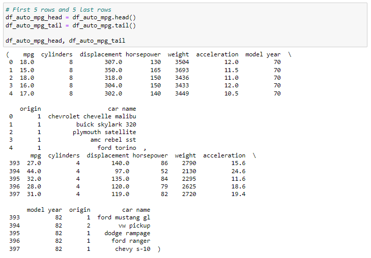
Here's a brief overview of the dataset:
- mpg: Miles per gallon
- cylinders: Number of cylinders in the vehicle
- displacement: Engine displacement (cubic inches)
- horsepower: Horsepower of the vehicle. It appears to be of type string, which suggests there might be some non-numeric values.
- weight: Weight of the vehicle
- acceleration: Acceleration (seconds to reach 60 mph)
- model year: Model year of the vehicle
- origin: Origin of the car (1: America, 2: Europe, 3: Asia)
- car name: Name of the car
For instance, the first car in the dataset is a "chevrolet chevelle malibu" with 18.0 mpg, 8 cylinders, and so forth and the last car is a "chevy s-10" with 31.0 mpg, 4 cylinders.
The shape of the df_auto_mpg DataFrame that is the number of rows and columns is determined as shown below:
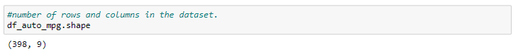
The dataset has 398 rows and 9 columns. That is, there are 398 car entries, each with 9 attributes (mpg, cylinders, displacement, horsepower, weight, acceleration, model year, origin, and car name).
Now the describe() function is used to display the basic statistics of the dataset such as the count, mean, standard deviation, minimum, 25th percentile, median, 75th percentile, and maximum for each numerical column.
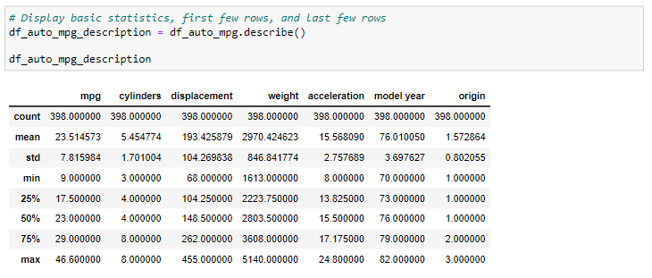
Next, the numeric columns and categorical columns are identified as it can be useful for various analyses and conversion of categorical values to numerical values.
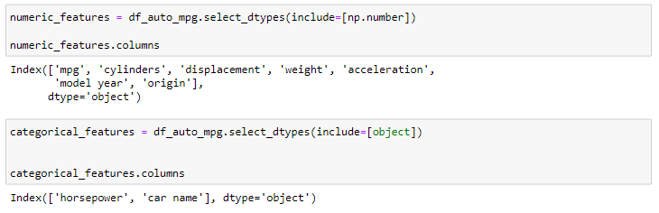
The columns 'mpg', 'cylinders', 'displacement', 'weight', 'acceleration', 'model year', and 'origin' contain numeric data and the columns 'horsepower' and 'car name’ contain categorical data.
We then proceed to identify the missing values in each column.
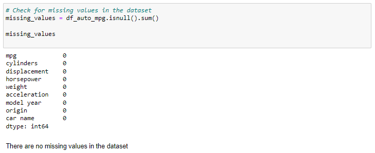
As it can be seen, there are no missing values in the dataset.
Skewness measures the asymmetry of the probability distribution of a real-valued random variable about its mean. Positive skewness indicates a distribution with an asymmetric tail extending toward more positive values, while negative skewness indicates a distribution with an asymmetric tail extending toward more negative values.
Kurtosis measures the "tailedness" of the probability distribution of a real-valued random variable. High kurtosis can indicate that the data has heavy tails or outliers.
The skewness and kurtosis for the numerical columns in the dataset is shown below:
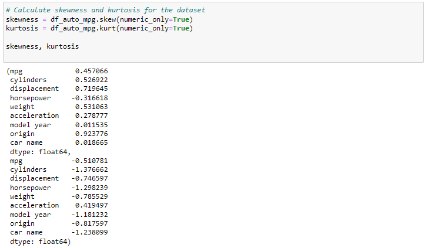
Columns ‘mpg’, ‘cylinders’, ‘displacement’, ‘weight’, ‘acceleration’, and ‘origin’ have positive skewness, indicating that they are right-skewed. The ‘model year‘ column has a skewness value close to 0, suggesting it's nearly symmetric. The ‘acceleration’ column is leptokurtic, that is it has heavier tails and a sharper peak compared to a normal distribution. Columns ‘mpg’, ‘cylinders’, ‘displacement’, ‘weight’, ‘model year’, and ‘origin’ are platykurtic, indicating they have lighter tails and flatter peaks than the normal distribution.
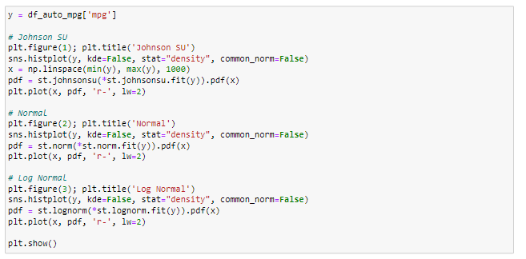 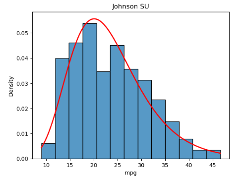 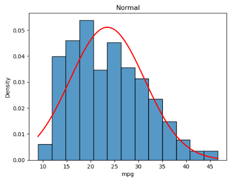 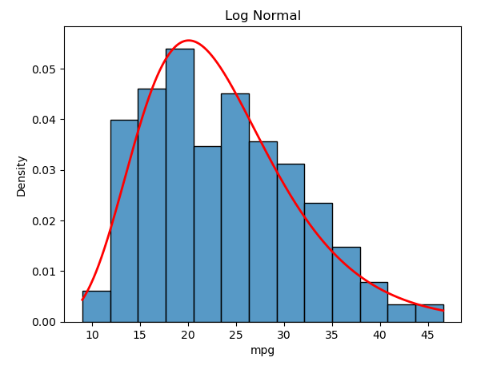
The 'mpg' variable from the df_auto_mpg dataset appears to be best described by the Johnson SU distribution among the three tested. It captures the skewness and kurtosis of the 'mpg' variable relatively well. It's evident that many cars in the dataset have fuel efficiencies between 15-25 mpg. Fewer cars achieve extremely high fuel efficiencies. The normal distribution is not an ideal fit, suggesting that the data has some skewness and might not be symmetrically distributed around its mean.
In order to understand the correlation between the different variables and ‘mpg’, the correlation is calculated.
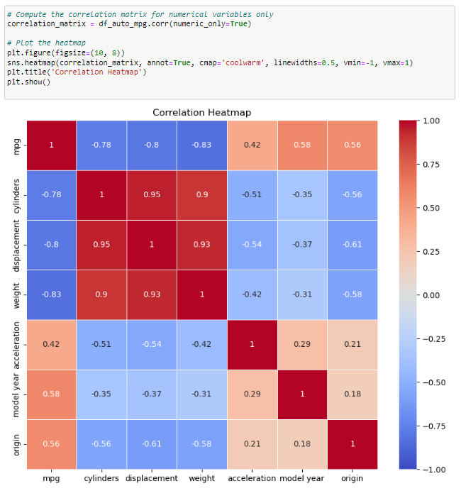
The features 'weight', 'displacement', and 'cylinders' have a strong negative correlation with 'mpg', meaning as they increase, the 'mpg' generally decreases. On the other hand, 'model year', 'origin', and 'acceleration' have a positive correlation with 'mpg', indicating that higher values in these features are associated with higher 'mpg'. The strength of these relationships can be inferred from the magnitude of the correlation coefficients, with values closer to -1 or 1 indicating stronger relationships.
Now, to visualise the relationships between the numerical variables, a correlation heatmap is used.
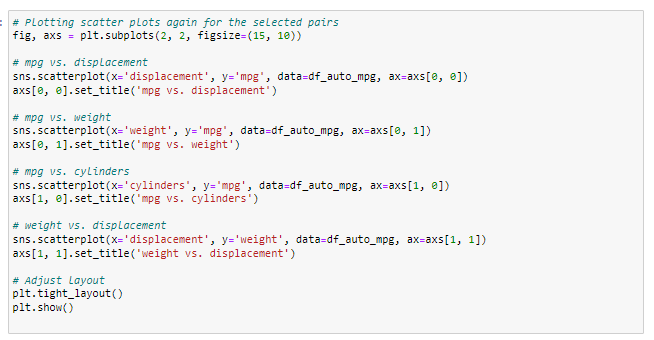
It can be seen that:
- mpg: Negatively correlated with cylinders, displacement, and weight.
- cylinders: Positively correlated with displacement and weight.
- displacement: Positively correlated with weight.
- weight: Negatively correlated with mpg and acceleration.
- acceleration: Negatively correlated with cylinders, displacement, and weight.
- model year: Mildly positively correlated with mpg.
- origin: Positively correlated with mpg and acceleration.
In the dataset, miles per gallon (mpg) tends to decrease as the number of cylinders, engine displacement, and vehicle weight increase. This suggests that heavier cars with larger engines are generally less fuel-efficient. Furthermore, cars with more cylinders typically have a larger engine displacement and are heavier. As cars become heavier, their acceleration tends to decrease. Interestingly, newer car models (represented by the 'model year') show a slight trend towards better fuel efficiency.
Lastly, the 'origin' of cars indicates some trends: cars from certain origins tend to be more fuel-efficient and have better acceleration.
Based on the correlation heatmap, the following pairs for scatter plots are chosen to further understand vehicle performance attributes and their interdependencies.
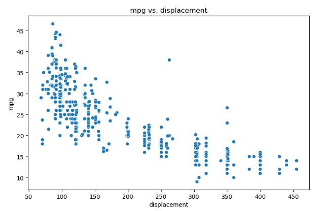 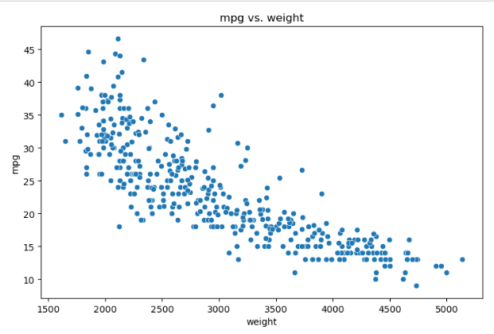 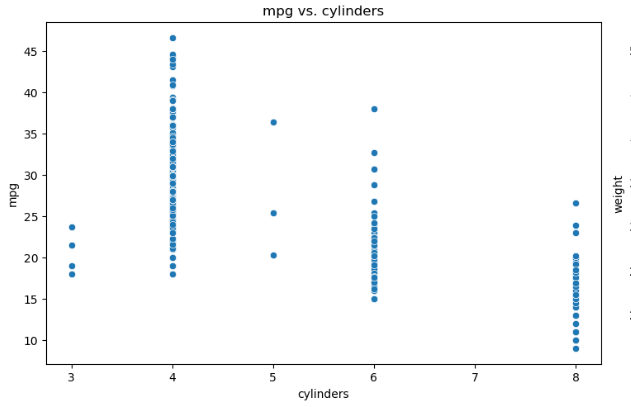 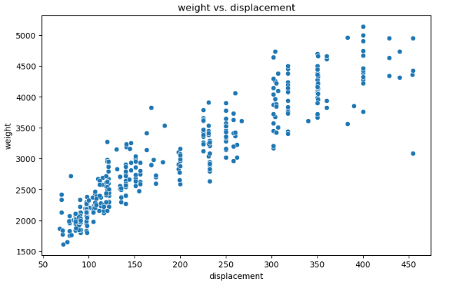
• As displacement increases, mpg also decreases, indicating a negative correlation.
• Heavier cars (weight) tend to have lower mpg, suggesting that heavier vehicles are less fuel-efficient.
• Vehicles with more cylinders usually have lower mpg, implying that engines with more cylinders might consume more fuel.
• There's a cluster of data points at higher displacement and higher weight, indicating that larger engines are typically found in heavier vehicles.
In order to understand the number of unique categories in the categorical variables, the following code is used:
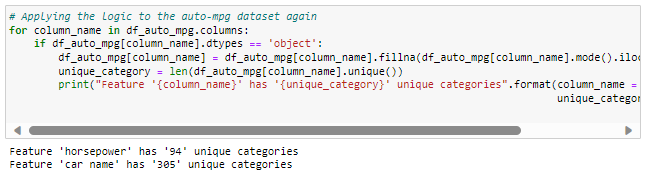
It can be seen that the feature 'horsepower' has '94' unique categories and the feature 'car name' has '305' unique categories.
Finally, the categorical variables are converted to numerical columns primarily because machine learning algorithms require numerical input.
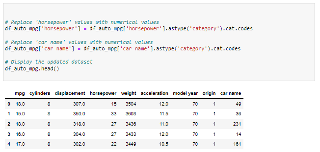
Reflection:
Furthermore, EDA is not just about preparing for modelling; it's also about generating insights. Through various visualization techniques and statistical measures, EDA provides a narrative about the data's underlying structures. These insights can then guide further data processing, feature engineering, or even business strategies.
In conclusion, as data continues to grow in volume and complexity, tools like Python and methodologies like EDA will be instrumental in shaping the future of business. They will enable companies to adapt to changing landscapes, make informed decisions, and stay ahead of the curve in an increasingly competitive market.
References:
- Kumar, S. (2019) Exploratory data analysis ...topic that is neglected in data science projects, Medium. Available here (Accessed: 11 October 2023).
- Sahoo*, K. et al. (2019) ‘Exploratory data analysis using Python’, International Journal of Innovative Technology and Exploring Engineering, 8(12), pp. 4727–4735. doi:10.35940/ijitee.l3591.1081219.
- What is exploratory data analysis? IBM. Available here (Accessed: 11 October 2023).
- Chatfield, C. (1986) ‘Exploratory Data Analysis’, European Journal of Operational Research, 23(1), pp. 5–13. doi:10.1016/0377-2217(86)90209-
- Patil, P. (2022) What is exploratory data analysis?, Medium. Available here (Accessed: 11 October 2023).